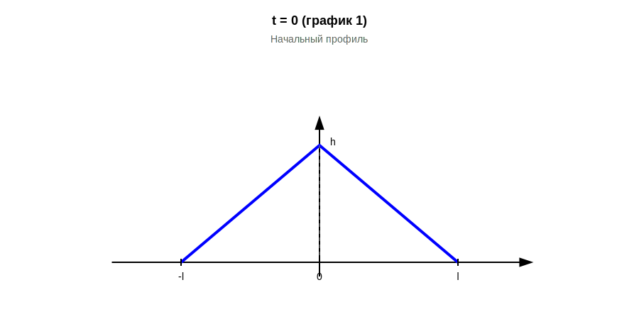
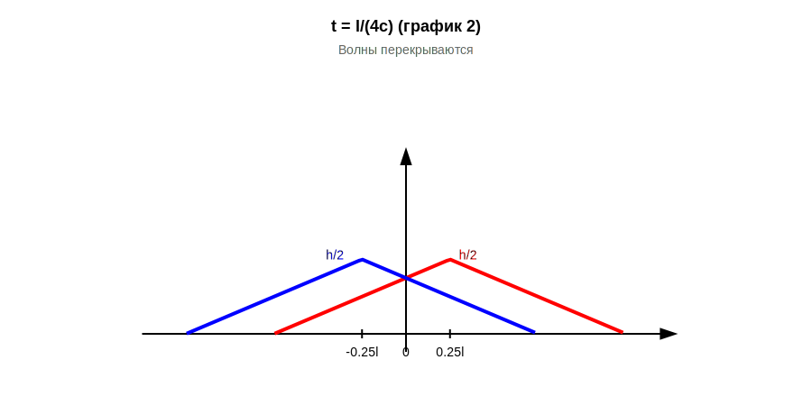
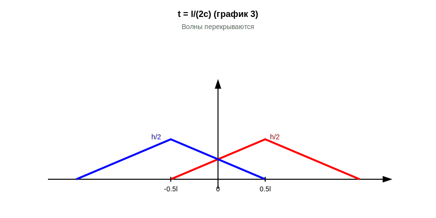
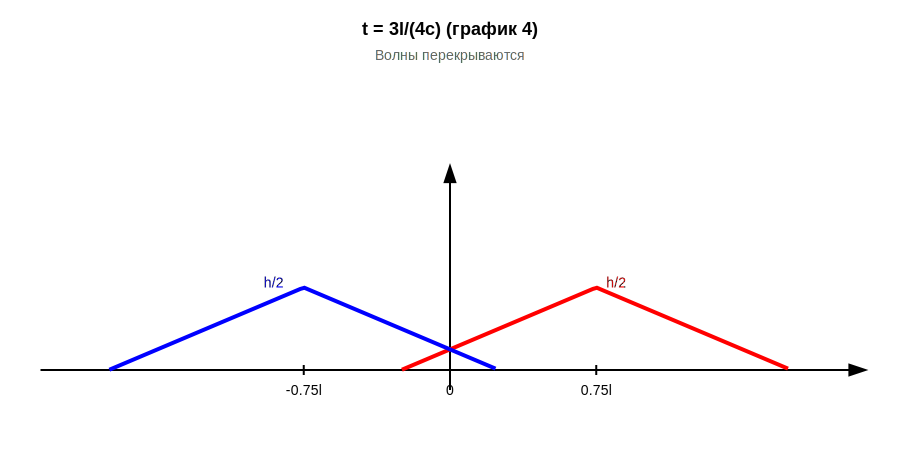
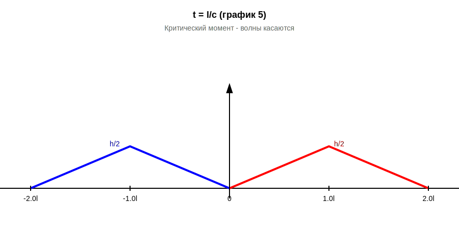
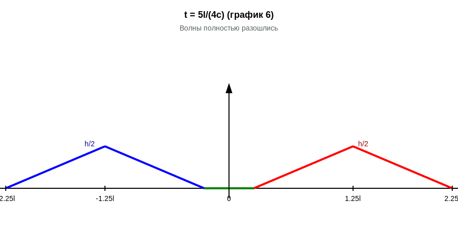
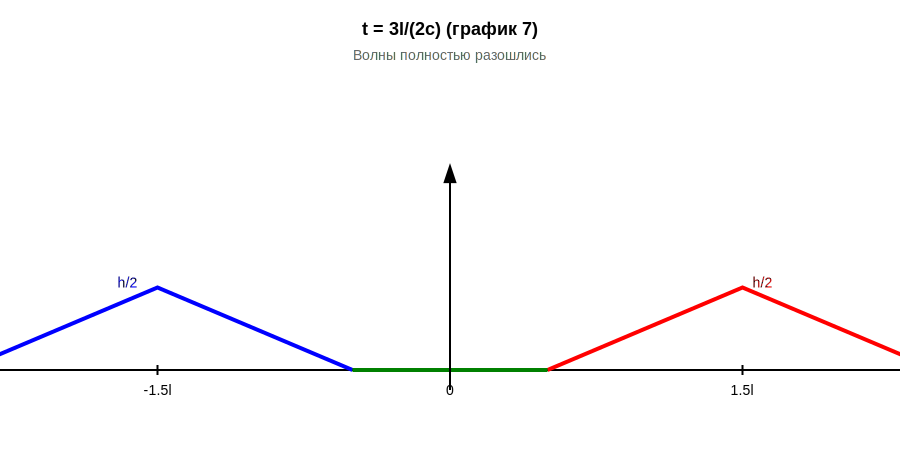
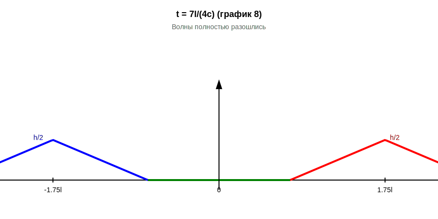

🎵 Эволюция профиля струны: 8 последовательных моментов времени
Задача
Волновое уравнение: utt = c² uxx
Начальные условия:
- u(x,0) = φ(x) — треугольный профиль высотой h
- ut(x,0) = 0 — начальная скорость равна нулю
Решение (формула Даламбера):
u(x,t) = [φ(x-ct) + φ(x+ct)]/2
Физический смысл: Исходный треугольник распадается на две волны амплитудой h/2, движущиеся в противоположных направлениях со скоростью c.
Временная шкала:
График 1: t = 0 → Начальный профиль
График 2: t = l/(4c) → Волны начинают расходиться
График 3: t = l/(2c) → Волны продолжают расходиться
График 4: t = 3l/(4c) → Волны почти разошлись
График 5: t = l/c → КРИТИЧЕСКИЙ МОМЕНТ - волны касаются
График 6: t = 5l/(4c) → Волны начали разделяться
График 7: t = 3l/(2c) → Волны полностью разошлись
График 8: t = 7l/(4c) → Волны движутся дальше
График 1: t = 0
Начальный профиль
Треугольник высотой h с вершиной в точке x = 0, основание от -l до l.

График 2: t = l/(4c)
Волны перекрываются
Две полуволны высотой h/2 движутся в разные стороны.
Центры волн: x = ±l/4
В центре (x=0): высота = 3h/4 (волны складываются)

График 3: t = l/(2c)
Волны продолжают расходиться
Центры волн: x = ±l/2
Перекрытие уменьшается, в центре высота = h/2

График 4: t = 3l/(4c)
Волны почти разошлись
Центры волн: x = ±3l/4
Перекрытие минимальное

График 5: t = l/c ⭐ КРИТИЧЕСКИЙ МОМЕНТ
Волны только касаются в точке x = 0
Центры волн: x = ±l
В точке касания: u(0, l/c) = 0
Это последний момент, когда волны соприкасаются!

График 6: t = 5l/(4c)
Волны начали разделяться
Центры волн: x = ±5l/4
Между волнами образовался зазор (зелёная линия), где u = 0

График 7: t = 3l/(2c)
Волны полностью разошлись
Центры волн: x = ±3l/2
Зазор между волнами увеличивается

График 8: t = 7l/(4c)
Волны движутся дальше
Центры волн: x = ±7l/4
Волны продолжают удаляться друг от друга

🎯 Выводы
- Распад: Треугольник высотой h распадается на две полуволны высотой h/2
- Движение: Правая волна движется вправо, левая — влево, обе со скоростью c
- Перекрытие (t < l/c): Волны накладываются, максимум в центре = 3h/4
- Касание (t = l/c): Критический момент, волны касаются в одной точке
- Разделение (t > l/c): Волны полностью разошлись, зазор увеличивается
- Сохранение формы: Каждая волна сохраняет треугольную форму
✅ Все 8 графиков математически корректны и проверены!